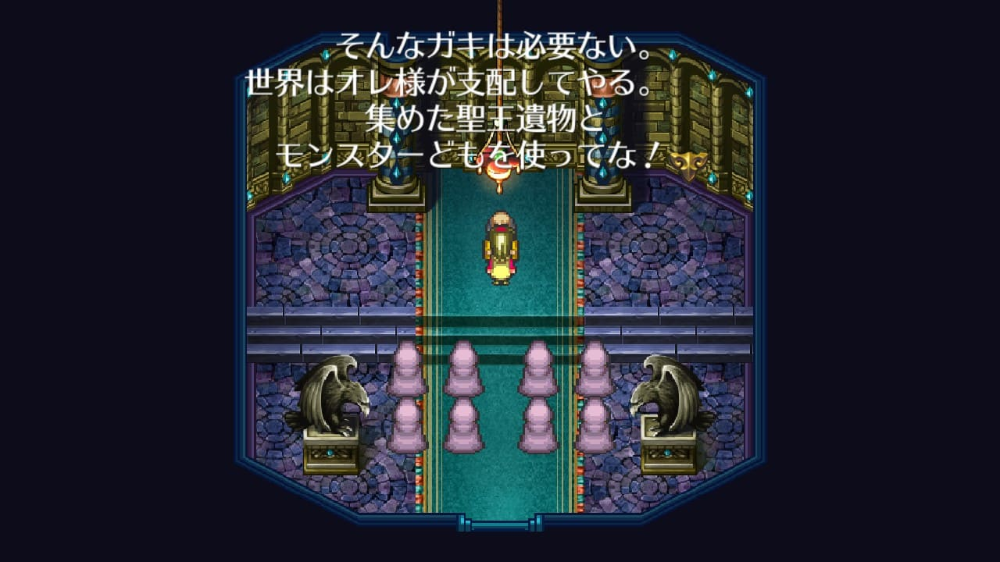

ゴドウィン
ゴドウィン
ゴドウィンはオープニングイベントでミカエルにクーデターを仕掛けた人物。モニカとミカエルの父フランツを殺した人物でもある。
ロアーヌ侯家の血縁で、フランツ侯（ミカエルの父親）とは従兄弟にあたります。
ゴドウィンは男爵なので、侯爵のフランツやミカエルより身分は下です。権力争いで下剋上をたたきつけ、支配者を抹殺したことになります。さらにミカエルが出兵して留守中に、モンスターと共にロアーヌを占拠。モニカを人質にとろうとしました。
しかしミカエルは頭が切れるので、ゴドウィンの陰謀には気付いていた。完全にミカエルの方が一枚上手です。
ゴドウィンの野望はオープニングで頓挫します。

マスカレイド盗難
ゴドウィンの反乱を収めた直後、カタリナが何者かにマスカレイドを奪われます。


神王の塔でマクシムスを倒すとマスカレイドが手に入ります。マスカレイドを奪ったのはマクシムスの部下だったんでしょう。

マスカレイドを奪われる事件は、ゴドウィンが起こしたクーデターの直後に発生しています。明言されてはいないので妄想ですが、そもそもこのクーデター裏にはマクシムスが絡んでいたんだろうなと個人的には思っています。
マクシムスは聖王遺物に興味を示し、多くの聖王遺物と魔王遺物を手に入れています。

聖王遺物の一つである聖王の槍はルートヴィッヒとクレメンスの戦い（メッサーナの乱）の直後、何者かによって盗まれます。聖王の槍は最終的にマクシムスの手に渡っており、これはマスカレイドを奪う時と手口が類似しています。
また、クーデターの最後では、ゴドウィンは何者かに操られており、他に黒幕がいるということがわかります。

一方、別イベントの台詞ですが、神王の塔での以下のマクシムスの台詞から、マクシムスはモンスターとも手を組んでいるということがわかります。

これは管理人の推測ですが、クーデターの最後に登場したモンスターはマクシムスが手懐けたモンスターだったのではないでしょうか。ゴドウィンをそそのかしてクーデターを起こさせ、その裏でマスカレイドを奪うというマクシムスの計画だったのではないかと思っています。
参考
- ロマサガ3の攻略情報局！ ゴドウィン男爵の反乱
- Neetlife Game ゴドウィン
- ゲーム攻略＆情報データベース ロマサガ3 メインイベント攻略 ゴドウィンとの戦い
- サガ用語辞典 Wiki 【ゴドウィン男爵の反乱】